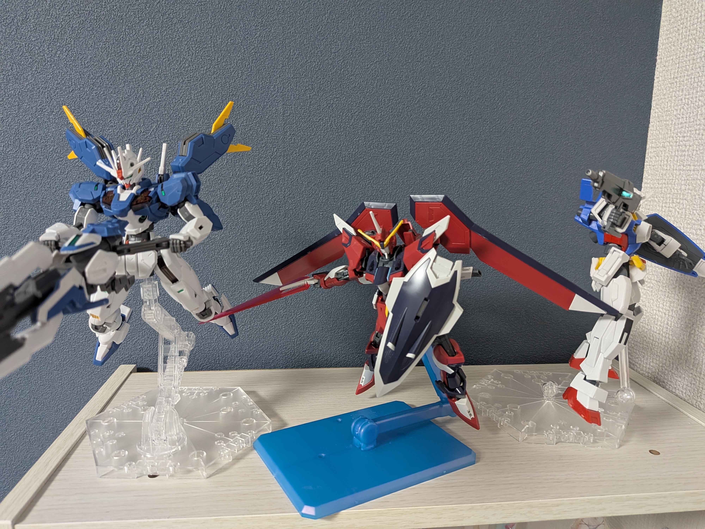

素組ビルダーの修行道へようこそ

目指せ！最高の素組クオリティ
趣味であったはずのガンプラ作り。しかし、近年の忙しさによりここ1年まともに組んできていなかった。増えていくガンプラの箱。これではいけない、買って満足している。そして部屋の邪魔である。ならばこのブログをモチベの一つとして、作っていこう。しかし作ると言ってもガンプラは手を加えることが絶対という層もいるだろうが私はあくまで素組をゴールとして買う人の参考になればと思う。[cite: 2]
・ブログ更新スケジュール
- 毎週金曜日：ガンプラ制作進捗状況を投稿します。[cite: 4, 5]
- 隔週更新：ガンプラ完成報告（機体によって難易度が違うため隔週）。[cite: 6, 7]
- 不定期更新：機体解説 or 買ってきたものレビュー。[cite: 8, 9]
・最新の更新履歴
- 制作進捗状況を更新しました。
- HGUC 機体解説レビューを公開！
- ブログを開設しました。